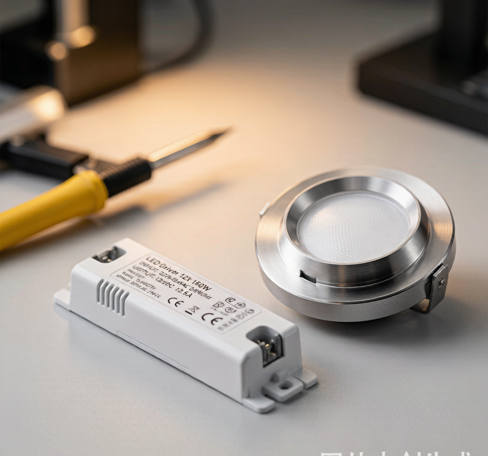
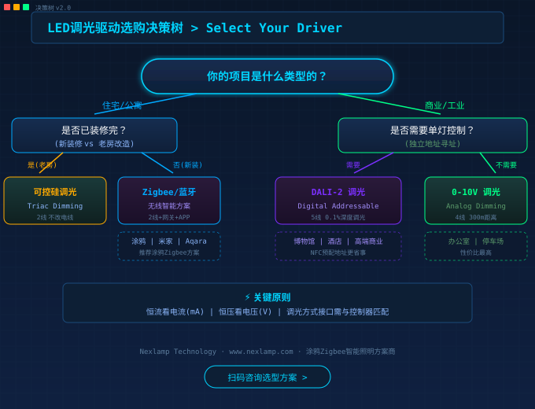
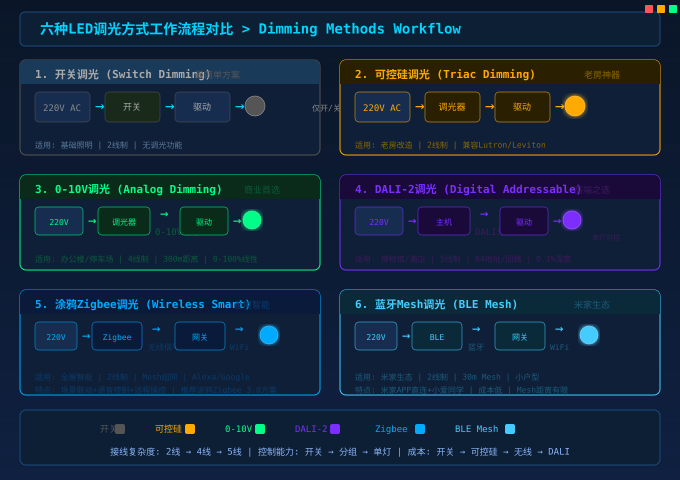

引言：为什么你的智能灯总是"不听话"？
花了大价钱装了全屋智能灯，结果要么低亮度频闪得像迪斯科，要么调光时忽明忽暗像闹鬼，要么压根调不了——这种体验，在小红书上随便一搜就是满屏吐槽。
问题的根源，十有八九不在灯本身，而在那个不起眼的小盒子——LED驱动电源。
驱动电源是LED灯具的"心脏"，它把220V交流电转换成LED芯片需要的直流电，同时负责调光信号的解析。选错了驱动，再好的灯珠也是白搭。
今天这篇指南，不讲深奥的理论公式，只用大白话帮你理清6种调光方式怎么选、5个常见坑怎么避、不同灯具配什么驱动。

六种调光方式，一张表看懂
智能照明发展到2026年，市面上主流的调光方式有6种。选择之前，先搞清楚它们分别是什么、用在哪儿。
| 调光方式 | 原理简述 | 接线 | 控制距离 | 适用场景 | 成本 |
|---|---|---|---|---|---|
| 开关调光 | 墙壁开关通断控制 | 2线（L+N） | 不限 | 基础照明，无需调光 | ★ |
| 可控硅（Triac） | 前/后切相调压 | 2线（L+N） | 50m | 老房改造，替换传统调光器 | ★★ |
| 0-10V | 模拟电压信号0-10V | 4线（L+N+信号×2） | 300m | 商业照明，停车场，办公楼 | ★★ |
| DALI-2 | 数字可寻址协议 | 5线（L+N+DA×2+PE） | 300m | 高端商业，博物馆，酒店 | ★★★ |
| 涂鸦Zigbee | 无线Zigbee 3.0 | 2线（L+N） | 100m（mesh） | 全屋智能，住宅，公寓 | ★★★ |
| 蓝牙Mesh | 无线BLE 5.0 | 2线（L+N） | 30m（mesh） | 米家生态，小户型 | ★★ |
懒人版选择公式
- 老房翻新不想改电线 → 可控硅调光（直接替换旧调光器，2线搞定）
- 商业办公/停车场 → 0-10V或DALI（稳定可靠，距离远，DALI还能单灯控）
- 新装修全屋智能 → 涂鸦Zigbee/蓝牙Mesh（配网关+APP，场景联动，语音控制）
- 博物馆/酒店大堂 → DALI-2（精准调光、故障反馈、分组管理）

采购中最容易踩的5个坑
坑一：只看功率不看电流
这是新手最容易犯的错误。LED驱动输出是恒流的，关键参数是电流（mA），不是功率（W）。
正确做法：先确认LED灯珠的额定电流（常见280mA、350mA、450mA），再选对应电流的驱动。功率只是参考值。
案例：某客户买了"12W驱动"配"12W筒灯"，结果灯珠一会儿就烧了。查了才发现灯珠需要280mA，驱动输出是350mA，电流超了25%。
坑二：调光器和驱动不配套
0-10V调光器分有源和无源两种，驱动也分电流源和灌电流两种，配错了完全不动。
正确做法：确认驱动规格书上的调光接口类型，和调光器一一对应。不确定就让供应商推荐配套方案。
坑三：低频闪不等于"不频闪"
很多驱动号称"不频闪"，实际上只是把频闪频率从灯珠可见的100Hz提到了3kHz以上。2026年实施的新国标 GB/T 31831-2025 要求SVM≤1.3才算合格。
正确做法：问供应商要SVM值和频闪百分比检测报告，别信口头承诺。
坑四：DALI地址没配好
DALI驱动出厂地址都是FF（广播模式），需要现场用DALI主机逐个分配短地址才能实现单灯控制。很多工程队不知道这一步，装完发现所有灯一起亮一起灭。
正确做法：买带NFC或红外配置功能的DALI驱动，施工前用工具预配地址。
坑五：驱动塞不进灯体
买之前量好灯具内部空间。恒流驱动的尺寸从60×30×22mm到150×45×32mm不等，功率越大体积越大，别等买回来发现塞不进灯体再退货。
2026年采购选型速查
| 灯具类型 | 推荐驱动方案 | 功率范围 | 核心参数 |
|---|---|---|---|
| 筒灯/射灯（住宅） | 涂鸦Zigbee恒流 | 7-12W | 280/350mA，Ra≥90 |
| 灯带（住宅/商业） | 0-10V/DALI恒压 | 24-60W | 12V/24V，每米功率 |
| 工业照明（工厂） | 0-10V恒流 | 30-100W | 高PF，防雷击 |
| 酒店/博物馆 | DALI-2恒流 | 7-50W | 0.1%调光深度 |
| 户外景观 | 大功率恒压 | 60-200W | IP67防水 |
Nexlamp驱动电源产品线对照
Nexlamp提供全系列涂鸦Zigbee/米家BLE Mesh/DALI/0-10V/可控硅驱动电源，覆盖7W到60W功率范围，全部通过3C认证。
| 系列 | 调光方式 | 功率 | 电流 | 特点 |
|---|---|---|---|---|
| ND-TYZB | 涂鸦Zigbee | 7-20W | 120-450mA | 支持Alexa/Google Home，场景联动 |
| ND-MJBL | 米家蓝牙Mesh | 7-20W | 120-450mA | 米家APP直连，小爱同学语音控 |
| ND-DALI | DALI-2 | 7-50W | 120-500mA | 0.1%深度调光，单灯可寻址 |
| ND-010V | 0-10V | 12-60W | 350-700mA | 兼容主流0-10V调光器 |
| ND-TRIAC | 可控硅 | 7-12W | 280-350mA | 后切相，兼容Lutron/Leviton |
结语
选驱动没那么难，记住三句话就够了：
如果你正在装修或者做工程项目，拿不准该选什么驱动，欢迎留言交流，或者访问 www.nexlamp.com 查看完整产品规格书。
Nexlamp Technology Co., Ltd. — 涂鸦Zigbee智能照明方案商 | 3C认证LED驱动电源厂家